Chapter 4 Designing Quantitative Research
4.1 Research Design
4.1.1 Experimental Designs
Experimental designs are a powerful tool in research, allowing you to test hypotheses and establish causal relationships between variables. In mass media research, these designs are particularly useful for exploring how different types of media content affect audience behavior and perception. There are several types of experimental designs, each with its own strengths and challenges. Understanding how to properly implement these designs is crucial for conducting valid and reliable research.
One of the most commonly used experimental designs is the between-subjects design. In a between-subjects design, different participants are assigned to different groups, and each group is exposed to a different level of the independent variable. This design allows you to compare the effects of various conditions on different groups of participants. For example, you might have one group of participants watch a news broadcast with a positive tone, while another group watches the same broadcast with a negative tone. By measuring differences in audience perception between these two groups, you can determine the impact of the tone of the broadcast on how the news is received.
This approach is particularly effective when you want to ensure that the effects you are observing are due to the independent variable rather than other factors. Because each group only experiences one condition, there is less risk of participants becoming biased or fatigued by multiple exposures. However, between-subjects designs also require careful consideration of group equivalence, ensuring that any differences between groups are due to the experimental manipulation and not pre-existing differences among participants.
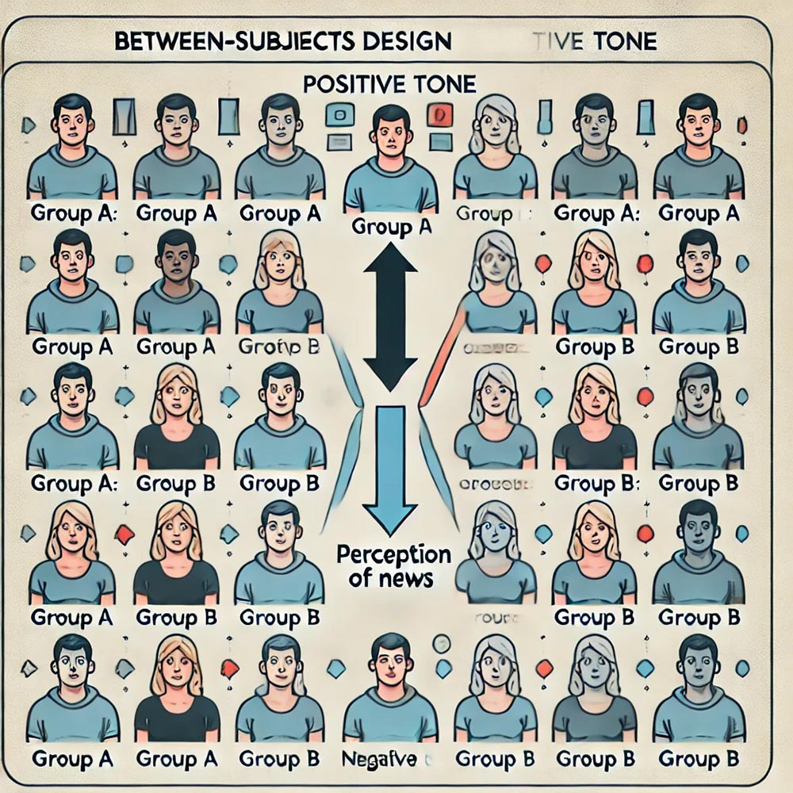
Figure 029. A diagram illustrating a between-subjects design. The image could show two groups of participants, with one group labeled “Group A: Positive Tone” and the other “Group B: Negative Tone.” Arrows could point from each group to a measurement outcome, such as “Perception of News.” This visual would help students understand how different conditions are applied to different groups in a between-subjects design.
In contrast to the between-subjects design, a within-subjects design involves exposing the same participants to all levels of the independent variable. This design allows for direct comparison within the same group, making it easier to observe how changes in the independent variable affect participants. For instance, you might have participants first watch a positive news broadcast and then a negative one, measuring their reactions after each. Because the same individuals experience both conditions, you can more accurately assess the impact of the variable by comparing their responses.
Within-subjects designs are particularly useful when you want to control for individual differences, as each participant serves as their own control. However, this design can also introduce potential issues like order effects, where the sequence in which conditions are presented affects the results. For example, participants might become more critical or fatigued after watching multiple broadcasts, which could influence their responses. To mitigate these effects, researchers often use techniques such as counterbalancing, where the order of conditions is varied across participants.
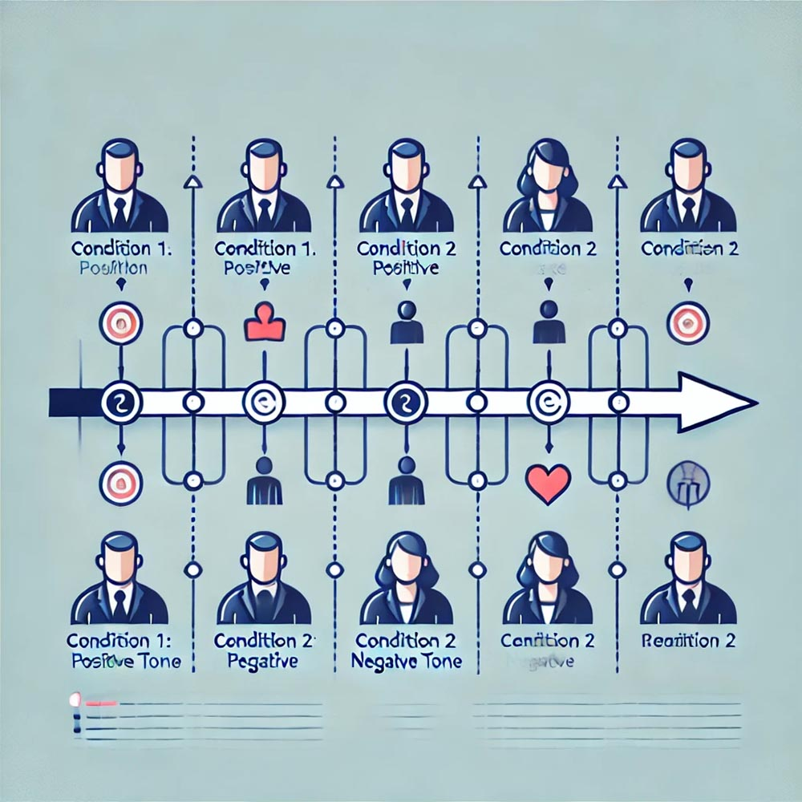
Figure 030. A timeline showing a within-subjects design. The image could depict a single group of participants experiencing two conditions in sequence, labeled “Condition 1: Positive Tone” followed by “Condition 2: Negative Tone.” Arrows could point to their measured reactions after each condition. This visual would help students see how within-subjects designs allow for direct comparison within the same group.
A crucial component of any experimental design is the inclusion of a control group. The control group is composed of participants who do not receive the experimental treatment and serve as a baseline for comparison. In a study on media influence, for example, the control group might be exposed to neutral media content, while the experimental groups receive content with a specific bias. By comparing the responses of the control group to those of the experimental groups, you can determine whether the independent variable (in this case, the media bias) has a significant effect.
Control groups are essential for isolating the effect of the independent variable and ruling out alternative explanations for your findings. Without a control group, it would be difficult to determine whether observed changes are due to the manipulation or other factors. For instance, if both the experimental and control groups show similar changes in perception, this might suggest that factors other than the media content are at play.
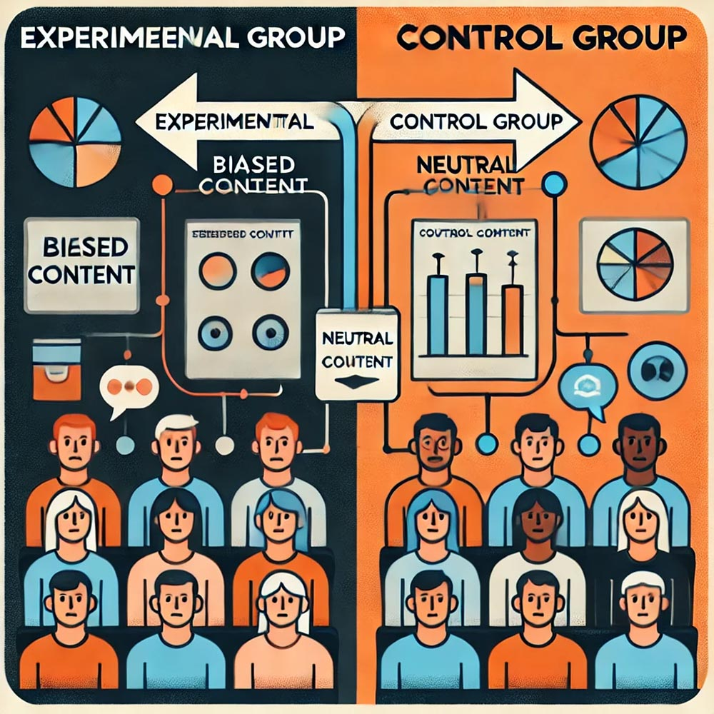
Figure 031. A side-by-side comparison of an experimental group and a control group. The image could show one group labeled “Experimental Group: Biased Content” and another labeled “Control Group: Neutral Content,” with arrows leading to different outcome measures. This visual would help students understand the role of a control group in providing a baseline for comparison in experimental research.
In the classroom, we will explore these concepts through case studies and practical exercises. We will begin by examining examples from mass media research where between-subjects designs have been applied, helping you understand how different conditions can be tested across groups. We will also conduct a classroom experiment where you are split into groups and exposed to different media stimuli. Afterward, we will discuss the results, focusing on how the different designs affected the outcomes.
To further illustrate within-subjects designs, we will use simple examples, such as testing the effect of different headlines on the same group’s perception of a news story. You will be assigned a project where you design your own within-subjects experiment, identifying potential issues like order effects and discussing strategies to counter them.
Finally, we will delve into the importance of control groups by discussing real-world examples and having you design an experiment where you implement a control group. You will also discuss why control groups are necessary and how they contribute to the validity of your findings.
By mastering these experimental designs, you will be better equipped to conduct rigorous and reliable research, allowing you to draw meaningful conclusions about the effects of media on audiences. This foundational knowledge is essential for any researcher in mass communications and will serve you well in your future studies and professional work.
4.1.2 Non-experimental Designs
In research, not all studies require or even allow for experimental manipulation. In many cases, researchers must rely on non-experimental designs to observe and analyze data as it naturally occurs. Two common non-experimental designs used in mass media research are cross-sectional designs and longitudinal designs. Each of these approaches offers distinct advantages and challenges, and understanding their applications is essential for conducting meaningful research when experiments are not feasible.
Cross-sectional designs are one of the most frequently used non-experimental approaches. This design involves observing a specific population at a single point in time. By collecting data from participants all at once, researchers can identify patterns, trends, and relationships between variables. For example, you might conduct a survey to assess the public’s opinion on the influence of social media at a particular moment. The data collected in a cross-sectional study can provide a snapshot of the current state of a population’s views, behaviors, or characteristics.
One of the primary advantages of cross-sectional designs is their efficiency. Because data is collected at a single point in time, these studies can be completed relatively quickly and are often less expensive than other research designs. They are particularly useful for descriptive studies that aim to understand the prevalence or distribution of a phenomenon within a population.
However, while cross-sectional designs are excellent for identifying relationships between variables, they have significant limitations when it comes to inferring causality. Since the data is collected at only one point in time, it is difficult to determine the direction of relationships between variables or to establish cause-and-effect relationships. For instance, if you find that individuals who spend more time on social media have higher levels of anxiety, a cross-sectional study cannot tell you whether social media use causes anxiety, whether anxiety leads to increased social media use, or whether another factor influences both.
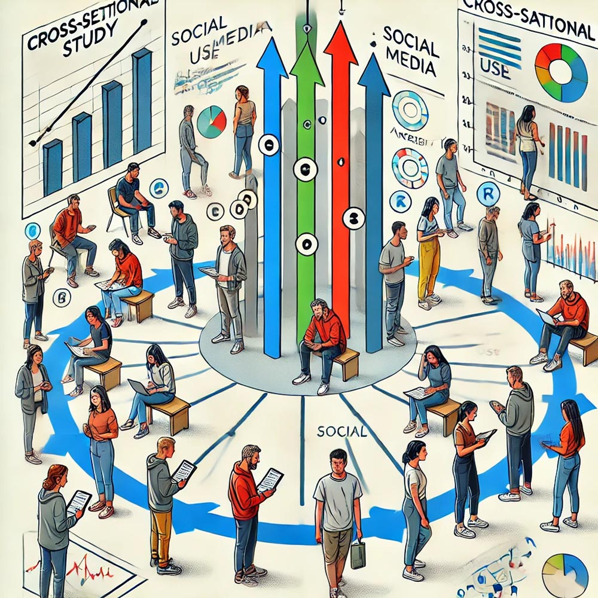
Figure 032. A visual representation of a cross-sectional study. The image could depict a single point in time with a large group of diverse participants responding to a survey. Arrows might show the relationships being studied, such as the link between social media use and anxiety levels. This visual would help students understand the nature of cross-sectional designs and their focus on capturing data at one moment.
In contrast, longitudinal designs involve observing the same participants over an extended period. By tracking changes in the same group of individuals over time, researchers can study developments, trends, and causal relationships more effectively than with cross-sectional designs. For example, you might follow a group of participants over several years to study the impact of media exposure on their political attitudes. By collecting data at multiple points in time, longitudinal studies allow you to see how variables evolve and how earlier events or exposures might influence later outcomes.
Longitudinal designs are particularly valuable for studying changes and developments that occur over time. They can provide insights into long-term effects and help establish causality by showing how one variable influences another across different time points. For instance, a longitudinal study might reveal that increased media exposure during adolescence leads to changes in political attitudes during adulthood, providing evidence of a causal relationship.
However, longitudinal research also presents several challenges. One of the most significant is participant dropout, also known as attrition. Over the course of a long-term study, some participants may drop out due to various reasons, such as losing interest, moving away, or experiencing life changes that make continued participation difficult. This can lead to biased results if the individuals who remain in the study differ in important ways from those who drop out. Additionally, longitudinal studies are typically more time-consuming and costly than cross-sectional studies, requiring careful planning and sustained resources.
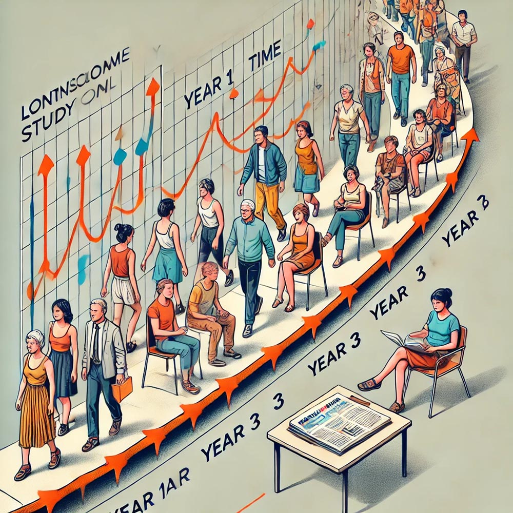
Figure 033. A timeline illustrating a longitudinal study. The image could show a group of participants being observed at multiple time points (e.g., Year 1, Year 3, Year 5), with arrows indicating how data is collected and tracked over time. The visual could highlight the concept of tracking changes and developments in variables, such as political attitudes, across these time points. This image would help students visualize the extended nature of longitudinal designs and their ability to capture change.
In the classroom, we will discuss the advantages and limitations of cross-sectional designs. Through examples and case studies, you will explore how these designs are used in real-world research, particularly in mass media studies. You will also have the opportunity to analyze a dataset from a cross-sectional study, interpreting the findings and considering how the design influences the conclusions that can be drawn.
We will also delve into longitudinal studies by examining famous examples, such as long-term media effect studies that have tracked changes in media consumption and its impact on behavior and attitudes over decades. These discussions will help you understand the value of longitudinal research in uncovering long-term trends and causal relationships.
To further your understanding, we will engage in a discussion on the challenges of longitudinal research, such as participant dropout. You will brainstorm potential solutions to these challenges, such as strategies for retaining participants or adjusting analyses to account for attrition. By the end of this section, you will be equipped to choose the appropriate non-experimental design for your research questions and to understand the implications of each approach for your findings.
By mastering both cross-sectional and longitudinal designs, you will be prepared to conduct research that is both insightful and methodologically sound, even when experimental manipulation is not possible. These non-experimental designs are essential tools in the researcher’s toolkit, particularly in fields like mass media where long-term effects and broad population trends are often of interest.
4.1.3 Sampling Methods
In research, the method you use to select your sample can significantly impact the validity and generalizability of your findings. Sampling methods determine how participants are chosen from the larger population and are crucial in ensuring that your study accurately represents the group you intend to study. There are various sampling methods, each with its own advantages and limitations. Understanding these methods will help you make informed decisions about how to design your study and interpret your results.
One of the most effective and widely used sampling methods is random sampling. In random sampling, participants are selected in such a way that every member of the population has an equal chance of being chosen. This method is considered the gold standard in sampling because it minimizes selection bias and enhances the generalizability of your study results. For example, imagine you are conducting a survey to understand viewer preferences for television programs. By randomly selecting viewers from a television network’s subscriber list, you ensure that each subscriber, regardless of their viewing habits, has an equal chance of being included in the study. This randomness helps ensure that your sample is representative of the larger population, allowing you to generalize your findings more confidently.
Random sampling is particularly valuable when you need to draw conclusions that apply broadly to the entire population. However, it requires careful planning and sometimes a larger sample size to ensure that the random selection truly reflects the diversity of the population. Additionally, while random sampling reduces bias, it does not eliminate it entirely; factors such as non-response can still introduce some degree of bias.
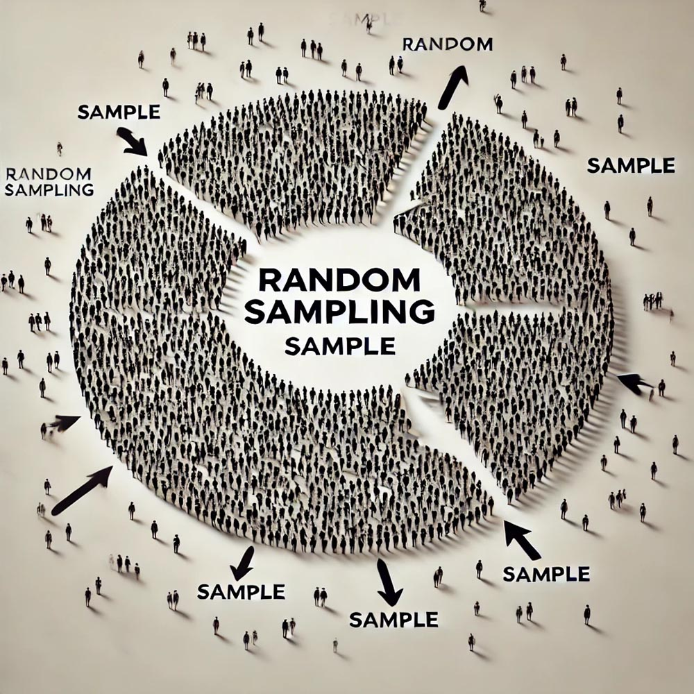
Figure 034. A visual diagram showing the process of random sampling. The image could depict a large circle representing the entire population, with small dots inside representing individuals. Arrows could point from different parts of the population to a smaller circle labeled “Sample,” indicating that individuals are selected at random. This visual would help students understand how random sampling works and its role in ensuring representativeness.
Another method is stratified sampling, which involves dividing the population into distinct subgroups, or strata, and then randomly sampling from each group. This approach ensures that each subgroup is represented in the sample, which is particularly useful when certain characteristics (such as age, gender, or income level) are important for the research. For instance, if you are studying media preferences across different age groups, you might divide the population into age strata (e.g., 18-29, 30-49, 50+) and then randomly select participants from each age group. This way, you ensure that each age group is adequately represented in your sample, allowing for more precise comparisons between groups.
Stratified sampling is especially beneficial when the population is heterogeneous, meaning that there are significant differences between subgroups. By ensuring that each subgroup is proportionately represented, stratified sampling improves the accuracy of your estimates and reduces sampling error. However, it also requires more detailed knowledge of the population and can be more complex to implement than simple random sampling.
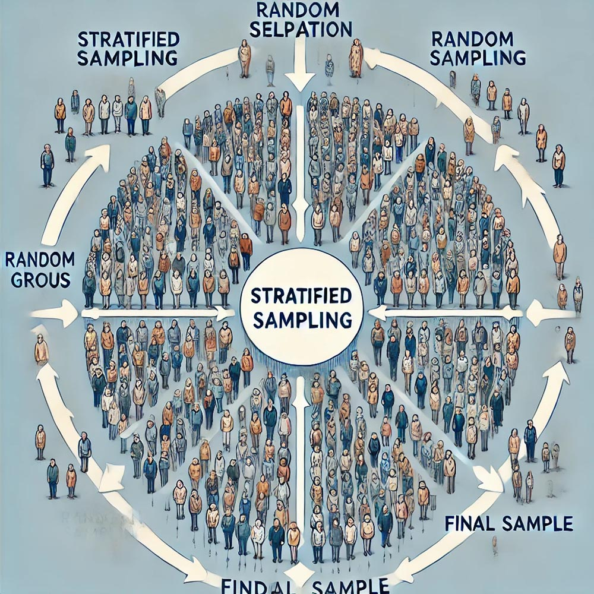
Figure 035. An illustration of stratified sampling. The image could show a large population divided into several subgroups (e.g., different age groups), with arrows indicating random selection from each subgroup into the final sample. This visual would help students visualize how stratified sampling ensures representation from all relevant subgroups.
In contrast, convenience sampling involves selecting participants who are readily available and easy to recruit. While this method is often used because of its practicality, it comes with significant limitations in terms of representativeness and generalizability. For example, if you are studying media habits among students and decide to survey students in your classroom, you are using convenience sampling. While this approach is easy and cost-effective, the sample may not be representative of all students or of the general population, leading to potential biases in your findings.
Convenience sampling is often used in exploratory research, pilot studies, or situations where other sampling methods are not feasible. However, it is crucial to recognize its limitations. Since the sample is not randomly selected, the results may not be generalizable beyond the specific group studied. To mitigate some of these drawbacks, researchers can combine convenience sampling with other techniques, such as increasing the sample size or using quota sampling to ensure some level of diversity within the sample.
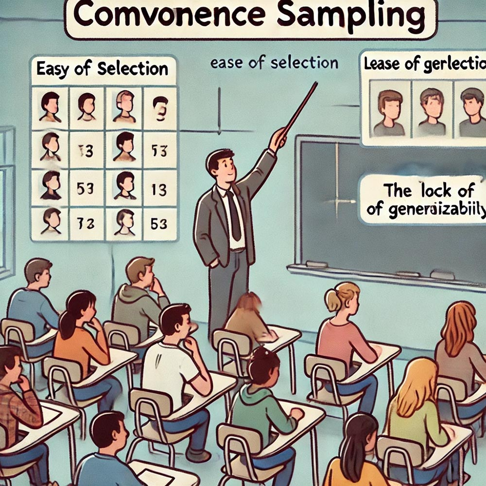
Figure 036. A simple diagram showing convenience sampling. The image could depict a researcher standing in front of a classroom, selecting participants from the students present, with a text box highlighting the ease of selection but also noting the lack of generalizability. This visual would help students understand the trade-offs involved in convenience sampling.
In the classroom, we will explore these sampling methods through practical examples and activities. For random sampling, we will discuss real-world cases where this method was used to enhance the validity of the research findings. You will also participate in a classroom activity where you create a simple random sampling plan for a hypothetical study, helping you grasp the practical application of this method.
We will also delve into stratified sampling by having you design a stratified sampling plan for a research project. This exercise will involve determining the appropriate strata and deciding how to sample from each subgroup to ensure a representative sample. This hands-on approach will solidify your understanding of how to implement stratified sampling in your own research.
Finally, we will discuss the practical benefits and limitations of convenience sampling. You will be assigned to identify situations where convenience sampling might be the only feasible method and to discuss ways to mitigate its drawbacks. By understanding when and how to use convenience sampling, you will be better prepared to make informed decisions about your research design.
By mastering these sampling methods, you will be equipped to select the most appropriate method for your research questions and to understand the implications of each method for your findings. This knowledge is essential for conducting rigorous and credible research, whether in mass media studies or other fields.
4.2 Data Collection Techniques
4.2.1 Surveys and Questionnaires
Surveys and questionnaires are among the most common tools used in research to gather data from a large number of participants efficiently. These tools allow researchers to collect information on attitudes, behaviors, preferences, and other variables of interest. However, the design of survey questions is crucial to ensure that the data collected is accurate, meaningful, and reflective of the respondents’ true opinions. Understanding the different types of survey questions—such as Likert-type items, closed-ended questions, and open-ended questions—will equip you with the skills to design effective surveys for your research.
One of the most widely used types of survey questions is the Likert-type item. A Likert-type item is a statement to which respondents indicate their level of agreement on a scale, typically ranging from “strongly disagree” to “strongly agree.” For example, you might ask respondents to rate their agreement with the statement, “Social media has a positive impact on society,” using a scale from 1 (strongly disagree) to 5 (strongly agree). This type of question is particularly useful for measuring attitudes and opinions because it provides a clear, quantifiable way to capture the strength of respondents’ feelings on an issue.
Likert-type items are advantageous because they offer a simple and standardized way to measure complex attitudes, allowing for easy comparison across respondents. Additionally, because the scale is consistent across items, Likert-type questions can be used to create composite scores that reflect overall attitudes toward a topic. However, careful attention must be paid to the wording of the statements to avoid bias. For instance, a poorly worded statement could lead respondents to answer in a way that does not accurately reflect their true opinions.
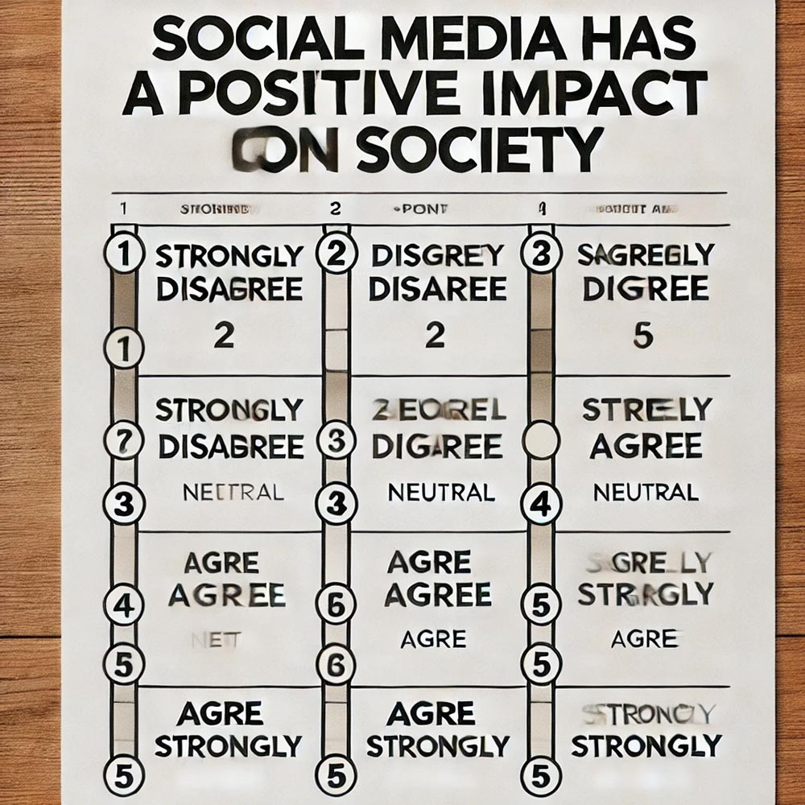
Figure 037. An example of a Likert scale question. The image could show the statement “Social media has a positive impact on society” with a five-point scale ranging from 1 (Strongly Disagree) to 5 (Strongly Agree). Each point on the scale could be labeled to emphasize the gradation of agreement. This visual would help students understand how Likert-type items are structured and how they are used to measure attitudes.
In our classroom discussions, we will explore examples from existing surveys to see how Likert-type items are employed effectively. You will also have the opportunity to create your own Likert-type items based on a research question of your choice. This exercise will be followed by a class discussion on the importance of clear and unbiased wording in survey design, helping you refine your skills in crafting effective survey questions.
Another common type of survey question is the closed-ended question. Closed-ended questions provide respondents with a set of predefined responses to choose from. For example, you might ask, “How often do you use social media?” with response options like “Daily,” “Weekly,” “Monthly,” or “Never.” Closed-ended questions are highly efficient for collecting data because they are easy to answer, straightforward to analyze, and allow for quick comparisons across different respondents.
The main advantage of closed-ended questions is their simplicity and ease of analysis. Since the responses are predefined, you can quickly categorize and quantify the data, making it easier to identify patterns and trends. However, one limitation of closed-ended questions is that they may constrain respondents’ answers, potentially leading to a loss of nuanced information. For instance, if the predefined options do not fully capture the respondents’ true behaviors or opinions, the data collected may not be entirely accurate.
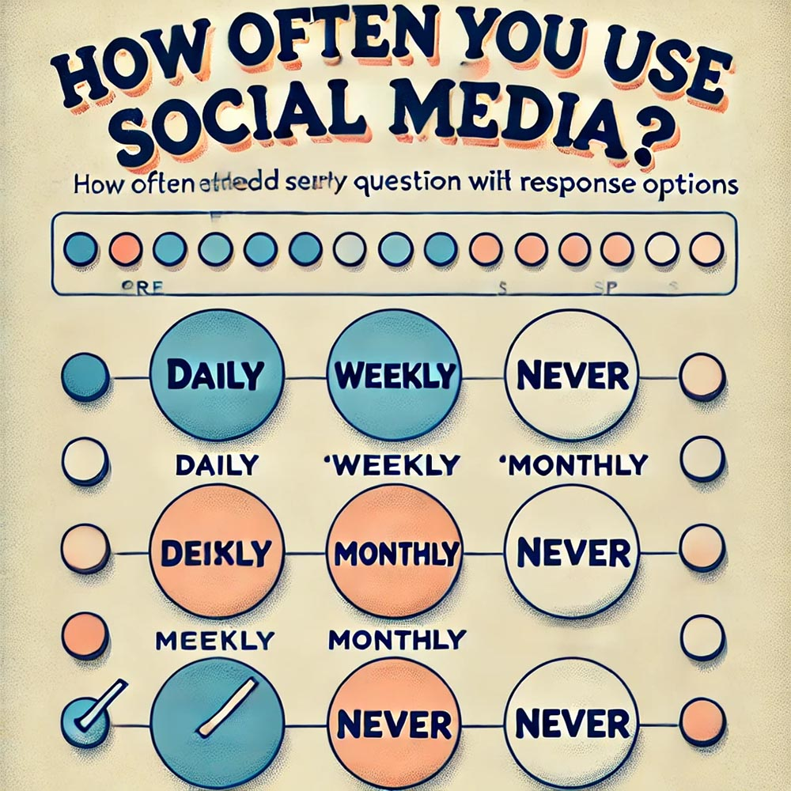
Figure 038. A sample closed-ended question with response options. The image could show the question “How often do you use social media?” followed by the options “Daily,” “Weekly,” “Monthly,” and “Never.” The visual could highlight how the predefined responses make it easy to quantify and analyze the data. This visual would help students understand the structure of closed-ended questions and their advantages in survey design.
To deepen your understanding, we will discuss the advantages and limitations of closed-ended questions, particularly in terms of how they affect the richness and accuracy of the data collected. You will engage in designing closed-ended questions for a survey, and we will discuss potential biases in the answer choices. This discussion will help you consider how the framing of questions and the selection of response options can influence the results of your survey.
In contrast to closed-ended questions, open-ended questions allow respondents to answer in their own words, providing richer and more detailed data. For example, you might ask, “What do you think is the most significant impact of social media on society?” This type of question gives respondents the freedom to express their thoughts and opinions without being confined to predefined responses.
Open-ended questions are valuable because they can uncover insights that might be missed with closed-ended questions. They allow respondents to provide more nuanced and personal responses, which can reveal underlying attitudes, motivations, or concerns. However, the trade-off is that open-ended questions can be more challenging to analyze. Since responses are often varied and complex, coding and interpreting the data requires careful consideration and may be time-consuming.
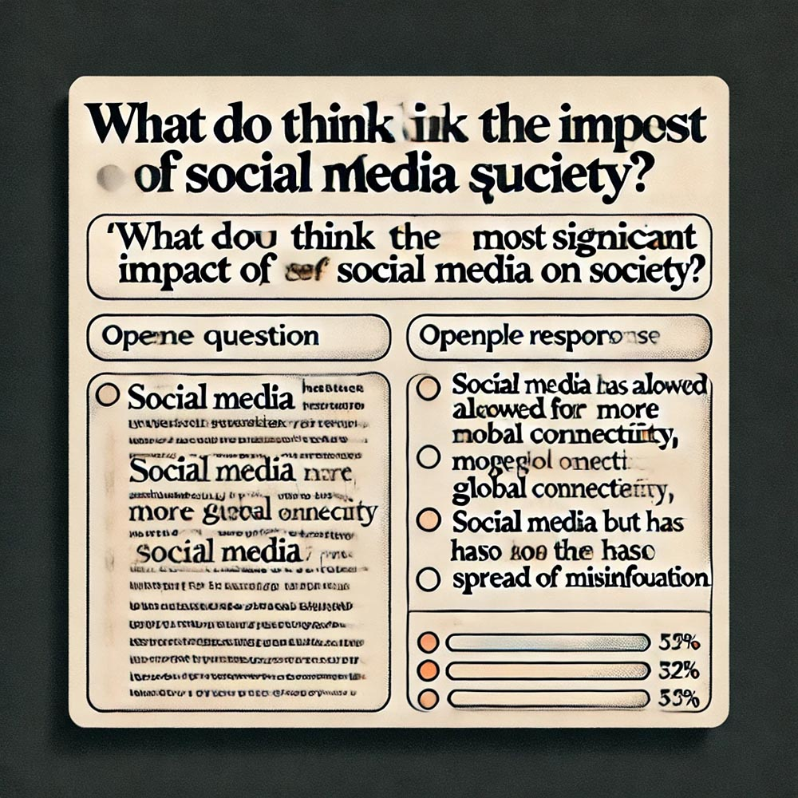
Figure 039. An illustration of an open-ended question response. The image could show the question “What do you think is the most significant impact of social media on society?” with a blank space for respondents to write their answers. The visual could also include a snippet of a sample response, highlighting the depth and richness of the data collected through open-ended questions. This visual would help students appreciate the value of open-ended questions in capturing detailed and nuanced information.
In our lessons, we will illustrate how open-ended questions can uncover insights that closed-ended questions might miss. You will be assigned a task where you analyze responses from open-ended questions, identifying common themes and discussing the challenges in coding the data. This exercise will help you understand the strengths and limitations of open-ended questions and develop your skills in qualitative data analysis.
By mastering the use of Likert-type items, closed-ended questions, and open-ended questions, you will be well-equipped to design surveys and questionnaires that effectively gather the information you need for your research. Understanding the appropriate context for each type of question and the implications for data analysis is essential for conducting rigorous and insightful research in the field of mass communications.
4.2.2 Observation Methods
Observation methods are a key component of qualitative research, particularly when studying behaviors, interactions, and environments in their natural settings. Unlike surveys or experiments, which often involve some degree of control or intervention, observation methods allow researchers to gather data in a more organic and unstructured way. There are various observation methods, each with its own approach to the research process. Understanding these methods—such as participant observation, complete observation, and direct observation—will enhance your ability to design and conduct qualitative research that captures the complexity of human behavior.
Participant observation is a method where the researcher actively engages in the environment or group being studied while simultaneously observing behaviors. This method is particularly useful when studying social interactions and cultural practices because it allows the researcher to gain a deeper, insider’s perspective. For example, a researcher might join an online forum dedicated to discussing news events to observe how users interact and share information. By becoming a participant in the forum, the researcher can experience the dynamics of the group firsthand and gain insights that might not be accessible through more detached observation methods.
However, participant observation comes with its own set of challenges, particularly related to ethical considerations and the potential for observer bias. As a participant, the researcher’s presence and actions can influence the behavior of those being observed, known as the observer effect. Additionally, the researcher’s own beliefs and experiences may color their observations, leading to bias in the data collection process. To address these challenges, it is important to maintain a balance between engagement and objectivity, and to be aware of how your participation might affect the data.
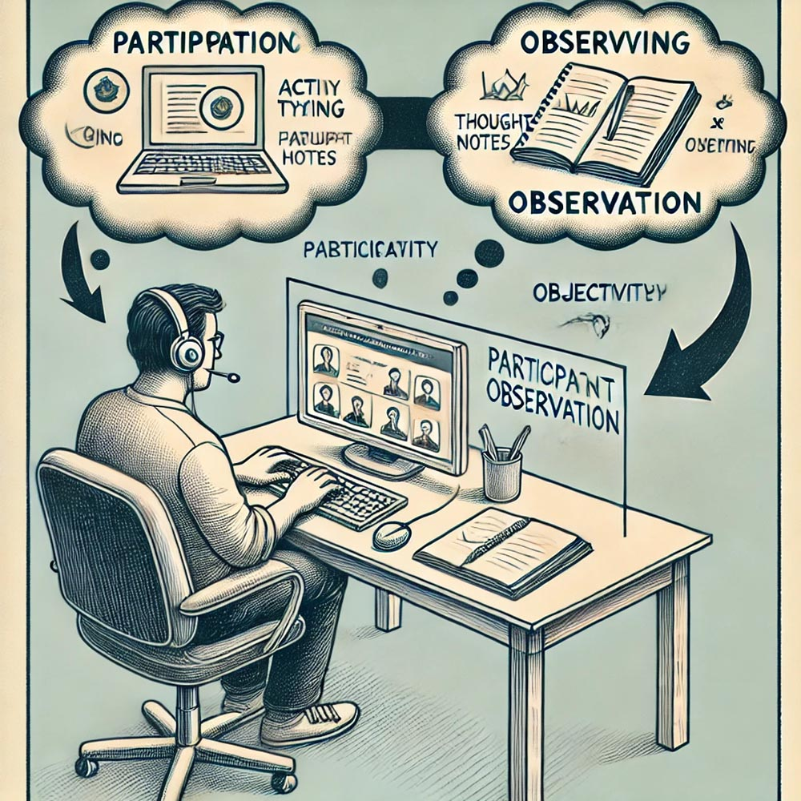
Figure 040. A diagram illustrating participant observation in action. The image could depict a researcher sitting at a computer, engaged in an online forum discussion, with a thought bubble showing them taking notes on the interaction. Arrows might indicate the dual roles of participating and observing, emphasizing the challenge of maintaining objectivity. This visual would help students understand the unique aspects of participant observation and the complexities involved in this method.
In our classroom discussions, we will explore the ethical considerations and challenges of participant observation. We will engage in a simulation where you will role-play as participant observers in a hypothetical scenario, allowing you to experience firsthand the difficulties of balancing participation with observation. After the simulation, we will reflect on these experiences and discuss how to mitigate potential biases in your research.
On the other end of the spectrum is the complete observer method, where the researcher observes the environment without interacting or participating in it. This approach minimizes the researcher’s influence on the subjects being studied, as the participants are often unaware that they are being observed. For example, you might conduct a study where you observe interactions in a public place, such as a park or café, without engaging with the people you are observing. By maintaining a distance, you can capture behaviors as they naturally occur, reducing the risk of altering the dynamics of the environment.
While the complete observer role reduces the risk of the observer effect, it also comes with limitations. One of the main drawbacks is the potential for a lack of depth in the data collected. Since the researcher does not engage with the participants, they may miss out on the context or motivations behind certain behaviors. Additionally, this method can lead to ethical concerns, particularly regarding the right to privacy and informed consent, especially in settings where participants are unaware that they are being observed.
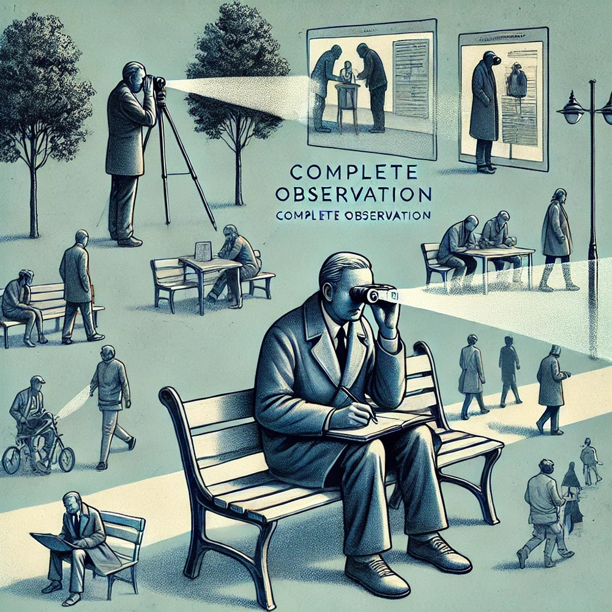
Figure 041. An illustration of a researcher conducting complete observation. The image could show a researcher sitting discreetly in a public place, such as a park bench, taking notes on the interactions they observe without engaging with the participants. The visual might highlight the unobtrusive nature of complete observation, while also noting potential ethical concerns. This image would help students grasp the concept of complete observation and its implications for research.
To help you understand the complete observer role, we will discuss its pros and cons, particularly in relation to the richness of the data and the potential for ethical issues. You will be assigned to perform a complete observation in a real or simulated environment, after which you will report your findings. This exercise will give you practical experience in observing without intervening, helping you develop the skills needed to conduct complete observations effectively.
Direct observation is another method that involves systematically watching and recording behaviors or events as they naturally occur. Unlike participant observation, where the researcher engages with the environment, or complete observation, where the researcher remains detached, direct observation focuses on the systematic and structured recording of specific behaviors. For example, you might conduct a study where you observe and record the frequency of certain types of media consumption in a public space, such as how often people check their phones while sitting in a café.
Direct observation is particularly useful for studies that require precise and quantifiable data on specific behaviors. It allows researchers to collect data that is directly observable, reducing the reliance on self-reported information, which can sometimes be inaccurate or biased. However, the challenge with direct observation is maintaining consistency in how behaviors are recorded and ensuring that the observation process does not become intrusive or influence the behaviors being studied.
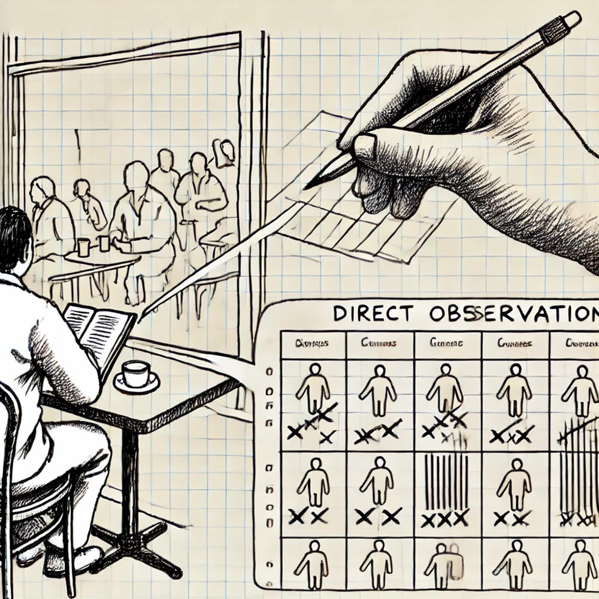
Figure 042. A chart or grid used by a researcher during direct observation. The image could show a researcher systematically recording behaviors, such as phone usage in a café, using a tally or checklist. The visual might highlight the structured nature of direct observation and the importance of consistency in recording data. This image would help students understand how direct observation is conducted and the attention to detail required for this method.
In our lessons, we will provide examples where direct observation has been effectively used in media research, such as studies on media consumption patterns or public behavior in response to media stimuli. You will participate in a direct observation exercise, where you will observe and record specific behaviors in a given environment. After the exercise, we will discuss the challenges you faced, such as maintaining objectivity and consistency in your observations, and how these challenges can be addressed in your research.
By mastering these observation methods—participant observation, complete observation, and direct observation—you will be equipped to choose the most appropriate method for your research questions and to conduct qualitative research that captures the complexity of human behavior. Each method offers unique insights and challenges, and understanding when and how to use them will enhance your ability to gather meaningful and reliable data in your studies.
4.2.3 Content Analysis
Content analysis is a research method used to systematically analyze media content by breaking down the communication into categories and examining the presence, meanings, and relationships of certain words, themes, or concepts. This method is particularly useful in mass media research for studying patterns, trends, and the influence of media messages on audiences. Content analysis can be divided into two main types: manifest content analysis, which focuses on the tangible and observable elements of the content, and latent content analysis, which delves into the underlying meanings and themes that are not immediately obvious.
Manifest content refers to the explicit, surface-level elements of media content that can be directly observed and quantified. This might include the frequency of certain words, phrases, or images in a text. For example, you could conduct a manifest content analysis to count the number of times the phrase “climate change” appears in news articles over a specified period. By quantifying these occurrences, you can identify trends in how often certain topics are covered or how frequently specific terms are used in the media.
Manifest content analysis is advantageous because it provides clear, objective data that can be easily replicated and compared across different studies. However, it is important to remember that while manifest content analysis can tell you what is present in the media, it does not necessarily explain the deeper meanings or implications behind the content. For instance, knowing that “climate change” is mentioned frequently does not reveal whether the coverage is positive, negative, or neutral, or what underlying messages are being conveyed.
Figure 043. A screenshot of a news article with the word “climate change” highlighted each time it appears. This visual could include a tally at the side showing the total count, illustrating how manifest content analysis quantifies observable elements in media content. This image would help students understand how manifest content analysis focuses on counting tangible aspects of media.
To help you grasp the application of manifest content analysis, we will explore examples from various media forms, such as newspapers, television broadcasts, and social media posts. You will have the opportunity to practice coding manifest content from a sample media text, where you will count and categorize specific elements, such as keywords or images. This exercise will also include a discussion on the importance of clear coding guidelines, which are essential to ensure consistency and accuracy in your analysis.
In contrast to manifest content, latent content refers to the underlying meanings, themes, or messages embedded within media content. Latent content analysis goes beyond the surface to explore the deeper significance of the content, such as the tone, bias, or ideological perspectives that may not be immediately apparent. For example, when analyzing a news article about political events, you might examine the underlying tone or bias of the coverage—whether it subtly favors one political party over another or presents the events in a positive or negative light.
Identifying and interpreting latent content is more complex than analyzing manifest content because it involves subjective judgment and interpretation. The same piece of content might be interpreted differently by different researchers, which can lead to variability in the findings. For this reason, latent content analysis often requires a more nuanced approach, including a thorough understanding of the context in which the content was produced and consumed.
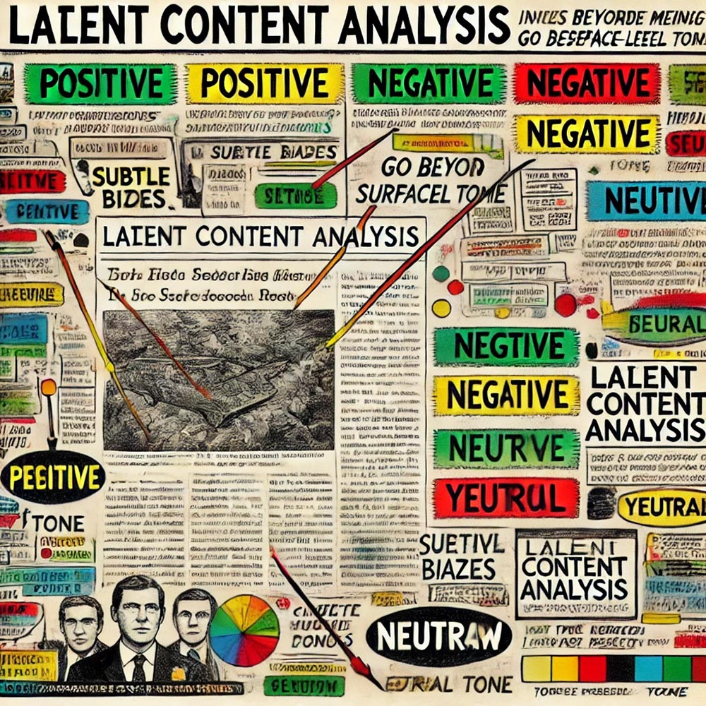
Figure 044. A news article with color-coded highlights indicating different tones (e.g., positive, negative, neutral) and annotations pointing out subtle biases or underlying themes. This visual would help students see how latent content analysis requires interpretation beyond just counting words or phrases. The image could also include a legend explaining the color-coding used in the analysis.
We will discuss the complexities of identifying and interpreting latent content through case studies, where you will analyze media samples to uncover hidden themes or biases. You will participate in a group activity designed to identify latent themes in a media sample, followed by a discussion on the subjectivity of such analysis. This exercise will help you appreciate the challenges and intricacies of latent content analysis, as well as the critical thinking required to conduct it effectively.
Central to both manifest and latent content analysis is the process of coding. Coding involves categorizing and tagging content to identify patterns, themes, or trends within qualitative data. Coding is essential because it allows you to systematically organize and interpret large amounts of data, making it easier to draw meaningful conclusions from your analysis. For example, you might develop a coding scheme to tag different types of media content as “informative,” “persuasive,” or “entertainment.” By applying this coding scheme to a sample of media texts, you can analyze the prevalence and distribution of these content types across different platforms or time periods.
Developing a coding scheme is a critical step in content analysis, as it defines how you will categorize and interpret the data. A well-defined coding scheme should be clear, consistent, and applicable across different texts. Additionally, achieving inter-coder reliability—where multiple researchers independently code the same content and reach similar conclusions—is essential to ensure the validity of your findings.
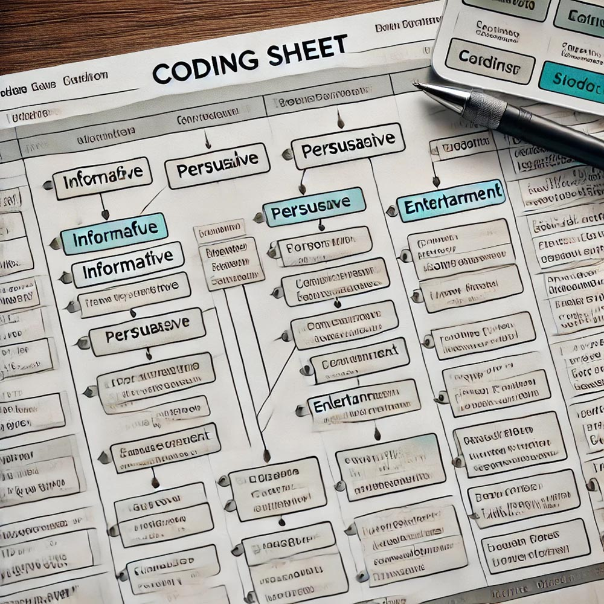
Figure 045. A coding sheet or software interface showing a list of categories (e.g., “informative,” “persuasive,” “entertainment”) with examples of how different media content is tagged under each category. This visual would help students understand how coding organizes content for analysis and the importance of having a well-defined coding scheme.
In our lessons, you will learn how to develop a coding scheme by working on a project where you create one for a specific type of media, such as news articles, advertisements, or social media posts. You will then apply your coding scheme to a sample of content, analyzing the patterns that emerge. This hands-on project will conclude with a discussion of your findings and the challenges you encountered, such as ambiguities in the content or discrepancies in coding decisions.
By mastering the techniques of content analysis—including both manifest and latent content analysis and the coding process—you will be equipped to conduct rigorous and insightful research into media content. These skills will allow you to uncover the visible and hidden messages within media, contributing to a deeper understanding of how media shapes and reflects societal values, beliefs, and behaviors.